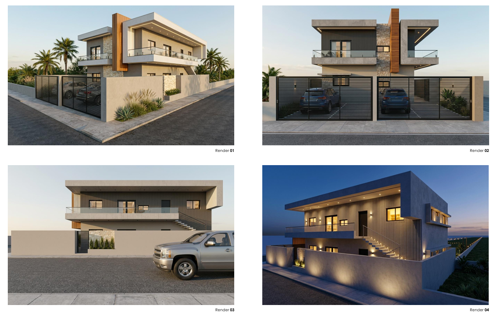
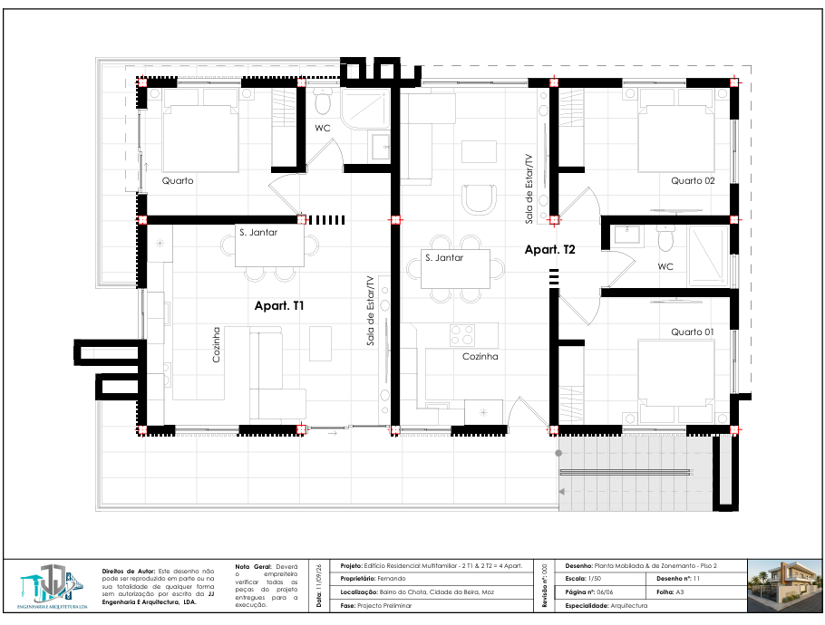

SERVIÇOS
O QUE FAZEMOS
A JJ Engenharia & Arquitectura actua em diferentes áreas da engenharia civil, oferecendo soluções adequadas às necessidades específicas de cada projecto.
Da construção de edifícios às obras hidráulicas, infraestruturas, fundações e captações de água, trabalhamos com foco na qualidade, segurança e rigor técnico.
Solicitar Orçamento
ÁREAS DE ACTUAÇÃO
Conheça as principais áreas de actuação da JJ Engenharia & Arquitectura.

CONSTRUÇÃO CIVIL
Executamos trabalhos de construção, reabilitação, estruturas, acabamentos e instalações, garantindo soluções adequadas às exigências de cada projecto.

ENGENHARIA HIDRÁULICA
Desenvolvemos soluções ligadas à gestão, condução e aproveitamento de água, assim como infraestruturas hidráulicas e sistemas associados.

INFRAESTRUTURAS
Actuamos na execução e desenvolvimento de infraestruturas de transporte e comunicação, integrando soluções técnicas para diferentes tipos de obra.

FUNDAÇÕES E SONDAGENS
Executamos serviços relacionados com fundações, sondagens, consolidação de terrenos, contenções e captação de água.
COMO TRABALHAMOS
Cada projecto é acompanhado com atenção às necessidades do cliente e às exigências técnicas da obra.


O SEU PROJECTO
Cada obra possui necessidades próprias. A nossa equipa está preparada para analisar o seu projecto e identificar a solução técnica mais adequada.
Entre em contacto connosco para apresentar as características do trabalho que pretende desenvolver.
Ver ProjectosPEDIR ORÇAMENTO
Conte-nos o que pretende desenvolver e entraremos em contacto consigo para analisar o projecto.
Falar connosco
🇲🇿
Moçambique
Cidade da Beira
Rua Camilo Castelo Branco
🇵🇹
Portugal
Setúbal
Rua Gonçalves Zarco,
2910-714
Telefone
+258 88 026 5260
+351 934 065 260
Email
geral@jjengarq.com
Instagram
@jjengarq_lda